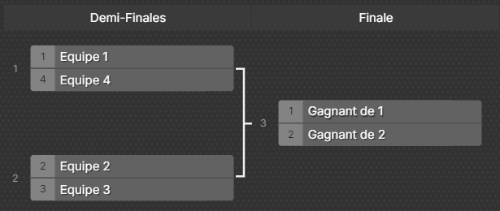

Les tournois Valorant et League of Legends des Poly Games Day se déroulent en deux phases distinctes. Une première
phase de qualification en ligne, puis une journée de tournoi en présentiel.
Les règles du règlement général s'appliquent au tournoi.
Un non-respect du règlement ou au déroulement du tournoi pourra entraîner une disqualification de l'équipe.
Phase de poule
La phase qualificative se déroulera le samedi 8 mars en distanciel. Les matchs seront annoncés
dans un canal
Discord
dédié. Les matchs se déroulent sous forme de round robin en
BO1.
Les quatres meilleures équipes à l'issue de cette phase préliminaire se qualifient pour le tournoi en présentiel.
Phase finale
La phase finale se déroulera le samedi 15 mars en présentiel. Les matchs se dérouleront sous
forme d'arbre de
tournoi présenté comme ci-dessous :
Les demi-finales se joueront en BO3 et la finale en BO5.
L'équipe gagnant la finale remporte le prix.
